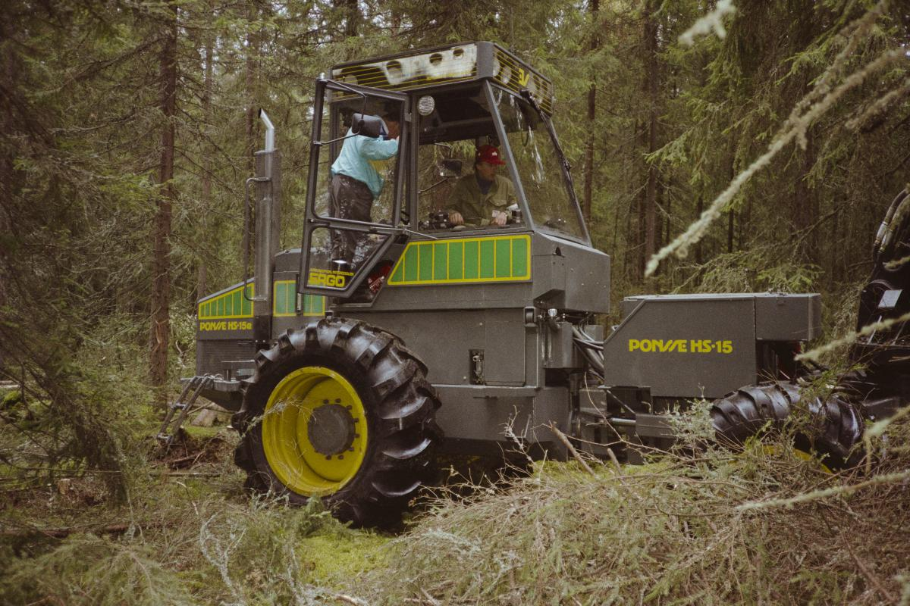

Ponsse HS-15 Harvester
A forest machine whose computerized head measures each tree in the dark while it is being eaten — the caliper and the saw are the same hand

Overview
The Ponsse HS-15 is a cut-to-length forest harvester built by Ponsse Oy of Vieremä, Finland — a heavy, wheeled or tracked machine with a crane-mounted harvester head instead of a saw-and-chainsaw crew. Its defining interaction is that the tree is measured as it is destroyed. The head grips a standing stem, fells it, and drags it through delimbing knives while a measuring wheel rolls along the bark counting length and a diameter sensor reads the stem's taper. A control computer uses those signals to compute the volume of each piece and to decide the bucking points — where the stem should be cut into sawlogs, pulpwood, and waste — before the operator in the cab ever lays eyes on the wood. The HS-15 photographed at the Metko forest-machine exhibition in Jämsänkoski in August 1988 sits precisely on Ponsse's own roadmap: the 1985–86 launch of grapple harvesters and the acquisition of diameter-measuring devices from Kajaani Automatiikka Ky, two years before the computerized Kajaani 2000 loader-control system arrived in 1990.
Deep dive
A conventional logging crew measured trees by hand: a feller looked at the trunk, judged its diameter, and cut to suit a mill's order sheet. The harvester collapses that whole judgement into a stream of sensor readings. Gripping wheels force the severed stem through the head; their rotations, or a dedicated measuring wheel running along the bark, give length continuously, while a pair of knives or a roller caliper measures diameter as the stem slides past. In the cab, one operator watches a display: species, length, diameter, computed volume, and the machine's proposed cuts. The tree is thus both the workpiece and the ruler — the act of processing it is the act of measuring it, and the measurement is gone the instant the log is bucked off.
Ponsse's official company history places the measurement function at the birth of the grapple harvester. The 1985 H 520 harvester head was launched, ran into grapple-operation troubles, and was followed by the H 60 head at the end of the same year. In 1986, under the heading "Measuring devices for harvester grapples", the company records that it "acquires these from Kajaani Automatiikka Ky. The very first machine with a functioning diameter measuring device is delivered to contractor Voitto Muikku in Puolanka." The HS-15 in the Lusto photograph is dated August 1988 — squarely inside that first generation of diameter-sensing Ponsse machines, and two years before the 1990 "computerised Kajaani 2000 loader control system" the company calls "years ahead of its time."
The cab of a harvester is not a place where a person cuts wood; it is a place where a person supervises a computer that cuts wood to specification. The operator selects a species and log-length table, watches the computed diameter and volume, and overrides the proposed bucking points when the wood is defective or the order changes. This is the agricultural cousin of the numerically controlled machine tool — except the stock is an irregular living tree, the sensor is a rolling wheel pressed against wet bark, and the specification is a mill's price list rather than a drawing. The interface is the gap between what the caliper reads and what the saw does.
The image used here is the museum-record photograph of the Ponsse HS-15 taken in Jämsänkoski, Finland in August 1988 by Kauko Tiuraniemi, held by Lusto — the Finnish Forest Museum (accession record lusto.knp-152139), where it is catalogued as "Ponsse HS-15-harvesteri. Valmistaja vieremäläinen Ponsse Oy. Metko-metsäkonenäyttely" — i.e. the Ponsse HS-15 harvester shown at the Metko forest-machine exhibition. It is released under CC BY 4.0.
The HS-15 is a reminder that the most consequential computer interfaces of the 1980s were often not on desks. Here the interface is a hydraulic arm, a rolling wheel, a diameter knife, and a cab display: a computer wrapped around a physical process so tightly that its inputs are the bark of a tree and its outputs are the length and number of logs. It reframes "data entry" as something done by a hungry machine to a living thing, and it is the collection's first example of a measurement loop whose actuator and sensor are the same grip.
Team & pioneers
- Ponsse Oy. Finnish forest-machine maker founded by Einari Vidgrén in Vieremä, Finland (1970); built the HS-15 harvester and the H 520/H 60 harvester heads.
- Kajaani Automatiikka Ky. Supplier of the harvester-grapple measuring devices Ponsse acquired in 1986; ancestor of the 1990 computerized Kajaani 2000 control system.
Media
Sources
- Ponsse Plc — History (1983 S 15; 1985 H 520 and H 60 harvester heads; 1986 measuring devices from Kajaani Automatiikka Ky; 1990 Kajaani 2000 control system)
- Wikipedia — Harvester (forestry) (measuring wheel + diameter sensors + control computer; one operator; cut-to-length logging)
- Wikipedia — Ponsse (H60 released end of 1985; 1988 ownership; 1990s computerized control systems)
- File:Ponsse HS-15 -harvesteri Jämsänkoskella 198808.jpg — Wikimedia Commons (CC BY 4.0, Kauko Tiuraniemi / Lusto)
- Finna / Lusto — Suomen Metsämuseo, record lusto.knp-152139 (Ponsse HS-15 at Metko forest-machine exhibition)